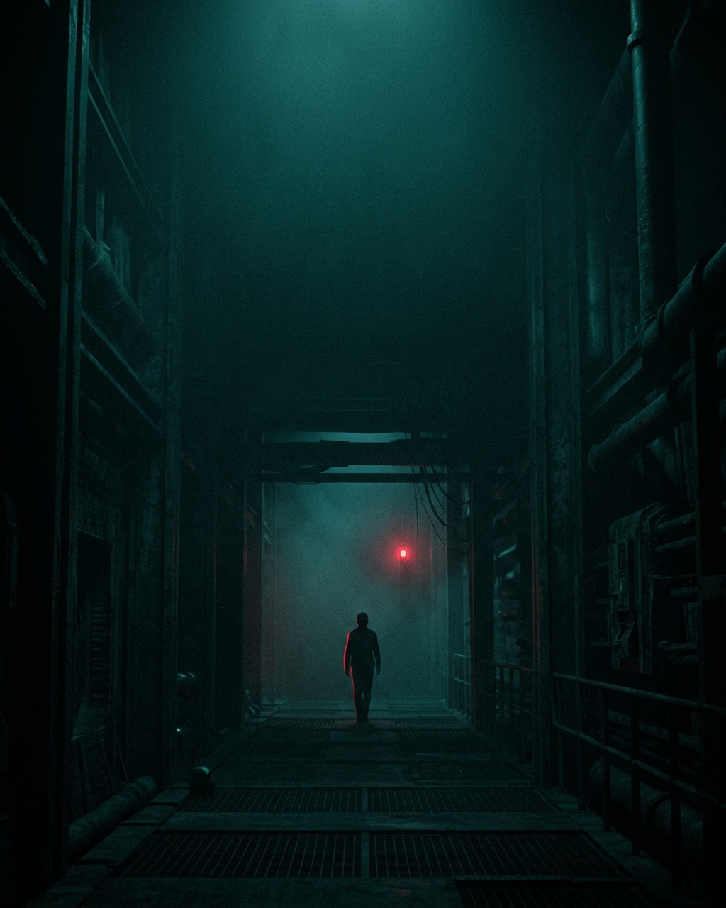
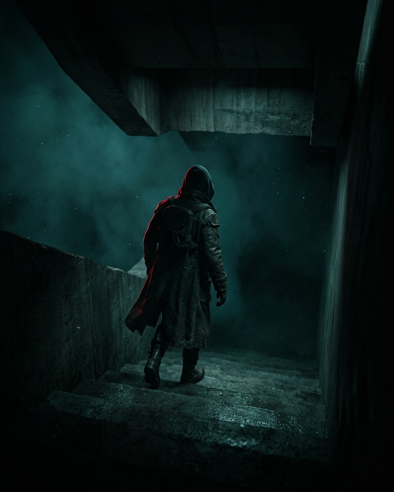
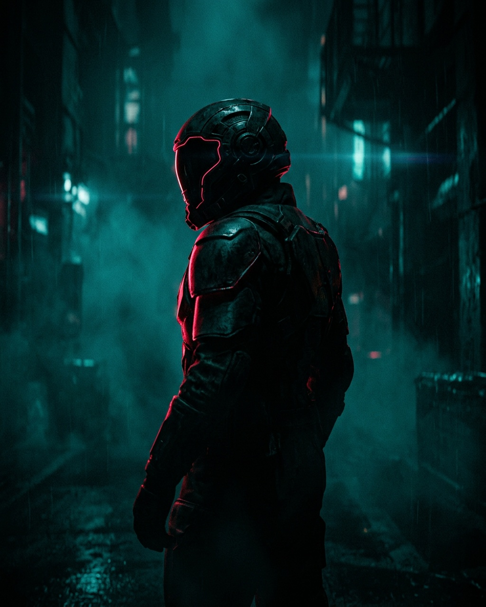
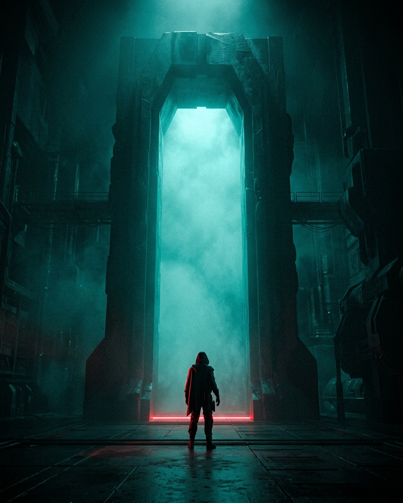

Vantascope · Transmission MMXXVI · four transmissions
Hollow Star
Forty years after the last carrier went dark, a single coherent pulse climbs out of the noise floor. It is not a beacon. It is a name — and it is calling one of us back.

Transmission I · The Trace
Something in the noise
The array was decommissioned in 1986 and left listening out of habit. On the ninth of March a ridge appears in the waterfall where there should be only hiss — too narrow to be weather, too patient to be a fault.
It sits exactly on the hydrogen line. The one frequency every listener in the galaxy would agree to try first.

Transmission II · The Descent
Into the quiet dark
The derelict has no power, no heat, no record of ever having launched. Yet the corridors are warm where a body has just passed. We go down because the pulse is below us — and because turning back was never an option that survived the briefing.
With every level the carrier narrows. Whatever is sending has noticed it is being heard.

Transmission III · The Witness
It remembers your name
The carrier is not empty. Between the pulses there is a cadence — three long, two short, a pause — repeated without variation for as long as we care to listen. It is a call sign. It was retired with the array in 1986, and it belonged to one person.
Whatever answered the signal was not built and was not born. When it finally turns toward the light it is wearing a face you buried four decades ago — patient, unhurried, almost kind.

Transmission IV · The Offer
Stay, or answer it
The airlock is open. On one side, the long cold ride home and a report no one will believe. On the other, the thing wearing your past, holding the door, asking only that you walk through it of your own accord.
Lock · 42.4 dB · 1420.405 MHz
A signal was sent.
Something answered.
It is cold, and it is dark, and it is patient, and it knows which one of us to ask for.